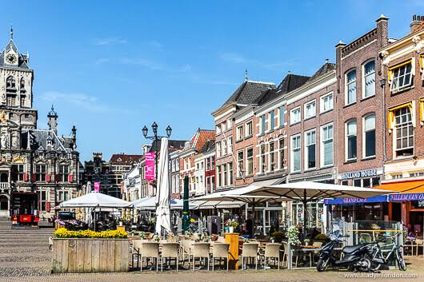
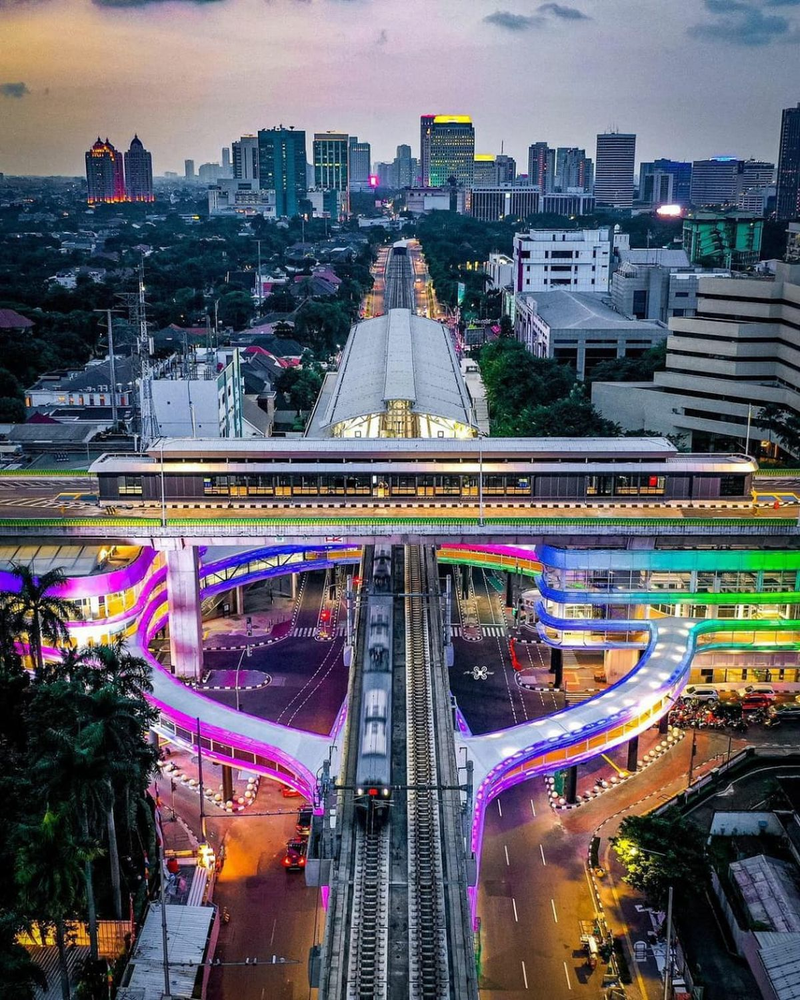

Mengapa
Anti-Car
Lebih Baik?
Kota yang tidak berfokus pada kendaraan bermotor memberikan dampak positif yang luas — bukan hanya pada lingkungan, tetapi juga pada kesehatan masyarakat, ekonomi lokal, keamanan jalan, dan kualitas hidup secara keseluruhan.
Setiap manfaat di bawah ini adalah hasil nyata yang telah dibuktikan oleh kota-kota di seluruh dunia yang telah mengadopsi pendekatan anti-car urbanism.
Penduduk dapat memilih moda transportasi yang ingin digunakan — bukan hanya terpaksa bergantung pada mobil pribadi saja.
Penduduk tidak harus memiliki mobil untuk berpergian sehingga biaya hidup secara keseluruhan berkurang signifikan.
Pejalan kaki dan pengguna jalan lainnya menikmati keamanan yang lebih baik karena tidak berada di bawah prioritas kendaraan bermotor.
Tata kota anti-mobil mengedepankan konsep "15-Minute City" — semua kebutuhan harian dapat dicapai dalam 15 menit jalan kaki.
Lingkungan padat pejalan kaki meningkatkan kunjungan spontan ke toko-toko lokal, mendorong pertumbuhan UMKM sekitar secara organik.
Selain menurunkan polusi udara, aktivitas jalan kaki dan bersepeda menjadi rutinitas harian yang meningkatkan kesehatan fisik penduduk.
Dengan pilihan transportasi yang lebih banyak dan berkualitas, lebih sedikit orang yang memilih untuk menyetir kendaraan pribadi.
Anak dan remaja dapat bermain di luar dan bepergian sendiri karena jalanan lebih aman — tidak lagi wajib disupirkan oleh orang tua.
Penghematan waktu dari transportasi publik yang efektif dan minimnya kemacetan mendorong produktivitas individu dan kota secara keseluruhan.
Pendapatan Pajak & Keuntungan Ekonomi Tinggi
Wilayah yang padat aktivitas — ciri khas kota anti-mobil — menghasilkan pendapatan pajak per km² yang jauh lebih tinggi dibandingkan kota car-centric. Return on Investment (ROI) infrastruktur meningkat karena setiap meter persegi tanah digunakan secara produktif, bukan untuk parkir yang tidak menghasilkan nilai ekonomi.


